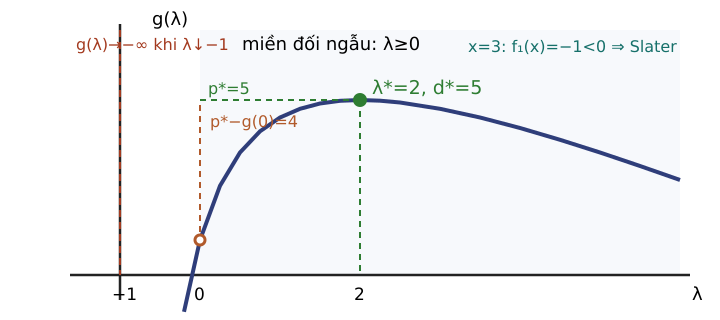

Trường Đại học Công nghệ · Đại học Quốc gia Hà Nội
Tiên quyết và sản phẩm học tập
Đầu vào
Dạng chuẩn và miền khả thi.
Hàm lồi, gradient và infimum.
Ma trận nửa xác định dương.
Nón và nón đối ngẫu.
Sản phẩm
Lập $L$, $g$ và bài toán đối ngẫu.
Kiểm tra đối ngẫu mạnh, Slater và KKT.
Đọc hình học và diễn giải độ nhạy.
Dùng nội tương đối và dưới gradient.
Mục tiêu học tập
LLO4 · Trích đề cương
Hiểu được hàm đối ngẫu và bài toán đối ngẫu Lagrange.
LLO5 · Trích đề cương
Thể hiện được minh họa hình học của hàm đối ngẫu.
Sản phẩm bổ trợ: kiểm tra Slater và KKT; diễn giải nhân tử và dấu độ nhạy. Các sản phẩm này phục vụ hiểu và đánh giá chứng nhận theo CLO1, không thay nội dung LLO4–5.
Bản đồ chứng nhận
Cận
Lagrangian và $g$
→
Khít
Slater
→
Hình học
Đường đỡ
→
KKT
Bốn nhóm
→
Độ nhạy
Giá biên
Vấn đề trung tâm: khi chưa biết nghiệm tối ưu, xây cận kiểm chứng được, xác định khi cận khít, rồi chuyển cận thành điều kiện tối ưu và thông tin độ nhạy.
A. Từ ràng buộc đến cận
Một nghiệm ứng viên chỉ cho cận trên cho bài toán cực tiểu.
Đã biết
$x$ khả thi cho giá trị $f_0(x)$.
Còn thiếu
Một cận dưới có thể kiểm chứng mà không cần biết $x^*$.
Khi cận dưới bằng giá trị ứng viên, ta có chứng nhận tối ưu.
Giá trị tối ưu đối ngẫu $d^*$ là cận dưới tốt nhất trong họ: $d^*\le p^*$.
Câu hỏi: với $\min(x_1^2+x_2^2)$, $x_1+x_2\ge1$, chứng minh $g(\lambda)=\lambda-\lambda^2/2$ trên $\lambda\ge0$, rồi tối đa hóa $g$ để suy ra $\lambda^*$ và $x^*$.
B. Khi cận trở thành giá trị tối ưu
Cận lỏng
$d^*<p^*$: chưa chứng nhận được giá trị ứng viên.
Cận khít
$d^*=p^*$: giá trị gốc được xác nhận bằng đối ngẫu.
Câu hỏi của phần này là điều kiện nào bảo đảm cận khít, không phải cách giải số bài toán đối ngẫu.
Cận tốt nhất trong ví dụ

$$g'(\lambda)=\frac{9}{(1+\lambda)^2}-1,$$
$$g''(\lambda)=-\frac{18}{(1+\lambda)^3}<0.$$
Trên $\lambda\ge0$: $\lambda^*=2$.
$d^*=g(2)=5=p^*$.
Yếu, mạnh và khoảng đối ngẫu
Khái niệm
Phát biểu
Phạm vi
Đối ngẫu yếu
$d^*\le p^*$
Luôn đúng
Khoảng đối ngẫu
$p^*-d^*\ge0$
Đo độ lỏng của cận
Đối ngẫu mạnh
$d^*=p^*$
Cần giả thiết hoặc chứng minh riêng
Ví dụ vừa tính cho khoảng bằng 0; bảng này đặt tên chính xác cho kết quả vừa quan sát.
Điều kiện Slater
Nội tương đối $\operatorname{relint}D$ là nội của $D$ xét trong bao affine của chính nó.
Xét bài toán lồi với bất đẳng thức lồi và đẳng thức affine:
$\mathcal G$ ghi đúng cặp giá trị do một $x$ tạo ra.
Vai trò của $\mathcal A$
Mở rộng lên phía phải và phía trên; $(0,p^*)$ nằm trên biên dưới.
Trong bài toán lồi, $\mathcal A$ là tập lồi; đường đỡ của nó mã hóa nhân tử.
Tiếp xúc và đối ngẫu mạnh
Đường đỡ
$t=g(\lambda^*)-\lambda^*u$.
Hệ số góc là $-\lambda^*$.
Pháp tuyến
Vector $(\lambda^*,1)$ vuông góc đường đỡ.
Cận khít khi đường qua $(0,p^*)$.
Khả thi chặt giúp loại cấu hình đường đỡ thẳng đứng tại biên $u=0$.
Trở lại biến $x$, thành phần pháp tuyến ràng buộc đi vào KKT dưới dạng $\lambda^*\nabla f(x^*)$.
Đọc một họ đường đỡ
$\lambda$
Đường
Tung độ cắt
0
$t=1$
1
1
$t=\tfrac92-u$
$\tfrac92$
2
$t=5-2u$
5
Câu hỏi: đối chiếu hình, đường nào cho cận tốt nhất và tiếp xúc tại $(0,p^*)$?
D. KKT như chứng nhận tối ưu
So sánh $f_0(x)$ với mọi điểm khả thi không phải là một phép kiểm tra cục bộ.
Tiếp xúc
đường đỡ
→
Pháp tuyến
gradient
→
KKT
bốn nhóm
Hai ứng viên, một chứng nhận
Cả $x=2$ và $x=4$ đều khả thi và làm ràng buộc hoạt động. Phương trình dừng chung là
$\nabla_xL(x,\lambda)=2x+\lambda(2x-6)=0.$
Ứng viên $x=2$
$4-2\lambda=0$, nên $\lambda=2\ge0$.
Ứng viên $x=4$
$8+2\lambda=0$, nên $\lambda=-4<0$.
Khả thi và hoạt động chưa đủ; dấu nhân tử loại $x=4$. Ta cần một hệ gom tất cả phép kiểm tra này.
Bù trừ và ràng buộc hoạt động
Nếu $x^*$ tối ưu gốc, $(\lambda^*,\nu^*)$ tối ưu đối ngẫu, hai nghiệm đều đạt và $p^*=d^*$, thì
$$\lambda_i^*f_i(x^*)=0,\qquad i=1,\ldots,m.$$
$f_i(x^*)<0$
Ràng buộc không hoạt động; phải có $\lambda_i^*=0$.
$\lambda_i^*>0$
Ràng buộc phải hoạt động: $f_i(x^*)=0$.
Bốn nhóm điều kiện KKT
Giả sử các hàm khả vi:
Nhóm
Điều kiện
Khả thi gốc
$f_i(x^*)\le0$, $h_j(x^*)=0$
Khả thi đối ngẫu
$\lambda_i^*\ge0$
Bù trừ
$\lambda_i^* f_i(x^*)=0$
Dừng
$0\in\nabla_x L(x^*,\lambda^*,\nu^*)+N_D(x^*)$
Với miền $D$ lồi, $N_D(x^*)$ là nón pháp tuyến của $D$ tại $x^*$: tập các vector $v$ sao cho $\langle v,y-x^*\rangle\le0$ với mọi $y\in D$. Khi $D=\mathbb R^n$ thì $N_D(x^*)=\{0\}$, nên điều kiện dừng thu về $\nabla_x L(x^*,\lambda^*,\nu^*)=0$.
Không kiểm tra riêng điều kiện dừng rồi gọi đó là KKT.
KKT cần hay đủ
Bối cảnh bài toán lồi: miền $D$ lồi; các hàm $f_i$ lồi trên miền phù hợp; các hàm $h_j$ affine; và tính khả vi (hoặc dùng dưới vi phân và nón pháp tuyến tương ứng khi không khả vi).
Bối cảnh
Kết luận đúng
Nghiệm gốc–đối ngẫu đạt, mạnh, khả vi
Nghiệm tối ưu thỏa KKT (tính cần)
Bài toán lồi khả vi, đẳng thức affine
Mọi bộ thỏa KKT là tối ưu (tính đủ)
Bài toán lồi thỏa Slater
KKT là cần và đủ
Bài toán phi lồi
KKT không bảo đảm tối ưu toàn cục
Slater là giả thiết chính quy cho tính cần (tồn tại nhân tử); tính đủ theo sau từ tính lồi khi đã có một bộ KKT. Không đảo vai trò của hai giả thiết.